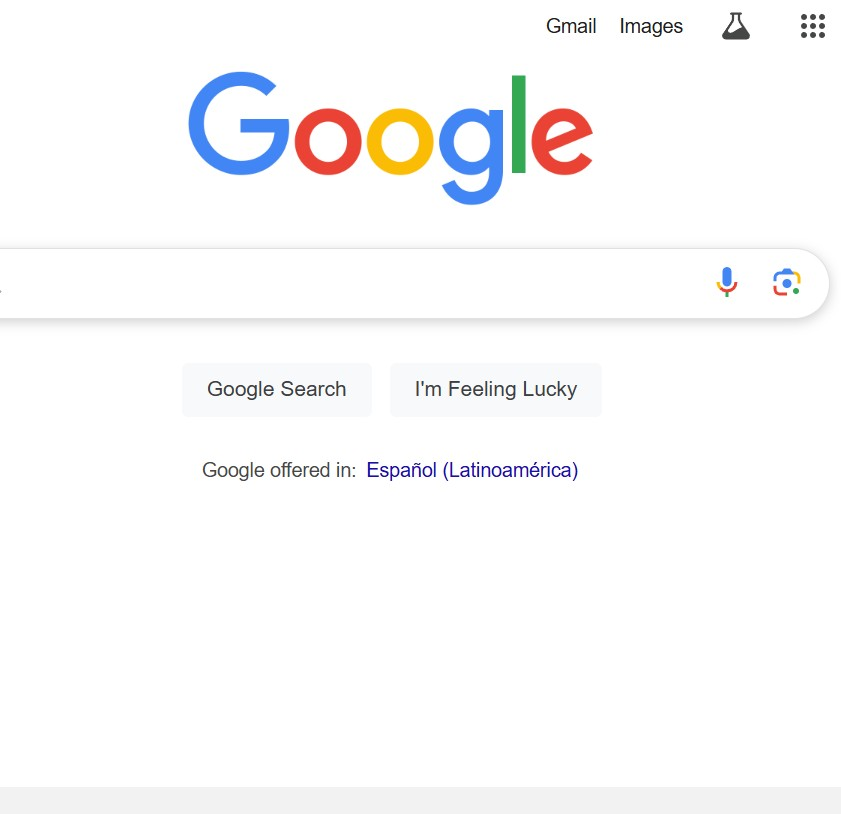

Visual Hierarchy
Organization/Company: Apple
Mobile Screenshot:
This principle is exemplified on the page by Apple’s strategic use of font sizes, color contrast, and positioning to lead the user’s eye to important elements like the main call-to-action (buy button) and product images. The hierarchy clearly guides the viewer through the page in order of importance.
Hick's Law
Organization/Company: Google
Mobile Screenshot:
Hick's Law states that the more choices a user has, the longer it will take them to make a decision. Google’s homepage is a great example of minimizing choices (just a search bar) to speed up decision-making and make the process simpler for the user.
Fitt's Law
Organization/Company: Amazon
Mobile Screenshot:
Fitt’s Law says that the time to acquire a target is a function of the distance to and size of the target. Amazon’s “Add to Cart” and “Buy Now” buttons are large and positioned in easy-to-reach areas, making them more accessible and improving user interaction speed on mobile devices.